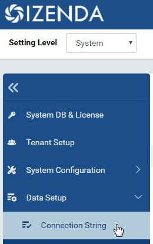
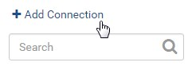
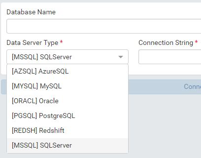
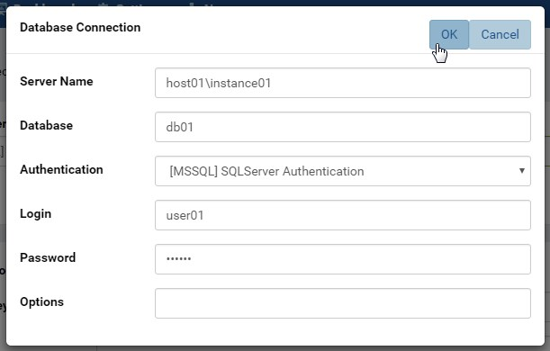
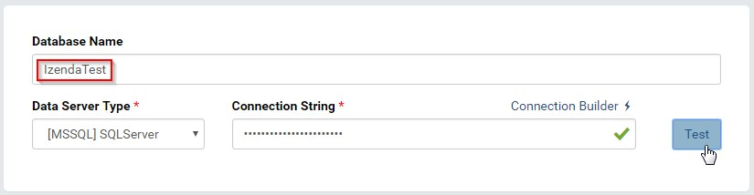
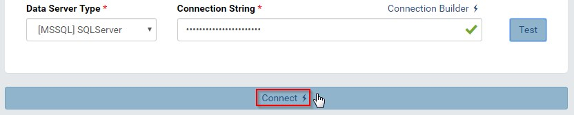
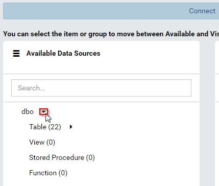
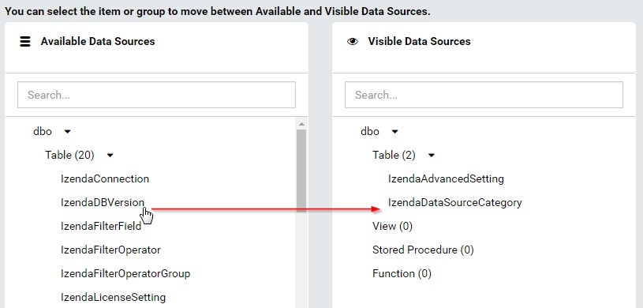
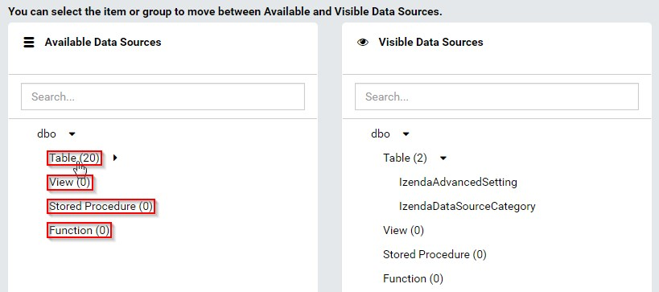
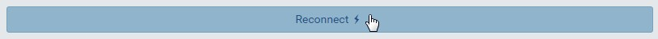

Connection String¶
The Connection String page allows user to
- manage the list of connections
- select individual items from these connections to be visible in Data Model and Reports
Note
For the Reporting Databases:
- The connection string user should have permissions to read schema; to select on all tables, views, store procedures and functions that will be used as data sources; to execute those store procedures and functions.
- The user should also have permissions to create temp tables
Add connection and select visible data sources¶
In this step user adds a connection and selects data sources to be visible in reports.
Warning
Please use caution when adding stored procedures to the visible data source list. All stored procedures are executed when added to visible (input parameters are set to NULL) to obtain the resulting fields returned. Some stored procedures are created to do things like delete tables, add data to tables, etc. If these are added to the visible data sources, they will be executed in the database.
- 
Fig. 48 Connection String Menu
In browser, log in to Izenda as a user with Connection String permission.
Click Settings, then Data Setup then Connection String in the left menu.
Select the Setting Level: either System or a specific tenant. (Fig. 48)
Click on Add Connection. (Fig. 49)
Fig. 49 Add Connection
- 
Fig. 50 Select Database Server Type
Select the database server type from the drop-down box. (Fig. 50)
- 
Fig. 51 Connection Builder tool
Click the Connection Builder icon (⚡) to help build the connection string easily. (Fig. 51)
This step can be bypassed when user already knows the connection string. In this case, it can be copied and pasted straight into the Connection String box.
Click the Test button to verify the connection string.
Note
Unless the Connection String has been verified successfully, user will not be able to move next.
- 
Fig. 52 Test the Connection and give it a name
The connection name will be automatically populated from the database name. User can edit to give it a more suitable name. (Fig. 52)
- 
Fig. 53 Connect to the Connection
Click the Connect button to show the list of available data sources. (Fig. 53)
- 
Fig. 54 Expand to see the data sources
Expand the listed user schemas and object types to see the data sources. (Fig. 54)
- 
Fig. 56 Move data sources between the two lists
Click on the data sources to move them between the two lists. (Fig. 56)
Fig. 57 Move a group of data sources
User can quickly move all data sources in a group (Table, View, Stored Procedure or Function) by clicking on that group name. (Fig. 57)
Click Save button at the top to save the connection and the visible data sources.
Connection Permissions¶
Izenda needs permissions to view the database schema and read from selected tables and views.
If using stored procedures as data source, Izenda needs execute permission on these stored procedures as well as create table and delete table permissions.
Note
The create table permission will be used to create temporary tables to store the output of stored procedures, for joining to other data sources. And the delete table permission will be used to clean up these temporary tables afterwards.
Delete connection¶

{kind=link}
{kind=link}
{kind=link}
{kind=link}
{kind=link}
{kind=link}
{kind=link}
{kind=link}
{kind=link}
{kind=link}
{kind=link}
{kind=link}
{kind=link}
{kind=link}
{kind=link}
Refresh the list of available data sources¶
When there is a remote change in a connection, it will not be automatically reflected in Izenda. The Reconnect button needs to be manually clicked on to detect that.
Click on the connection.
Click the Reconnect button.
Fig. 64 Reconnect the connection
The remote changes in the data sources will be marked as either New data source or Changed data source.
Go to Data Model page to resolve the changes.
{kind=link}
{kind=link}
{kind=link}
{kind=link}